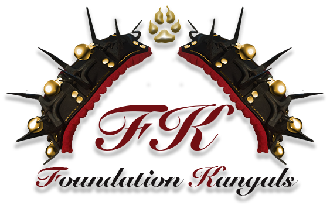

<ion-content [fullscreen]="true">
  <ion-grid class="ion-no-padding ion-no-margin">
    <ion-row class="ion-no-padding ion-no-margin">
      <ion-col size="12" class="ion-no-padding ion-no-margin">
        <ion-toolbar>
          <ion-buttons slot="end" class="ion-padding-end">
            <ion-menu-button></ion-menu-button>
          </ion-buttons>
          <!--   -->
        </ion-toolbar>
        <div class="home-logo">
           
        </div>
        <div class="about-title">
          <h1 #aboutTitle><span class="title-cap">A</span>bout 
            <span class="title-cap">K</span>angals</h1>
        </div>
        
      </ion-col>
    </ion-row>
    <!-- BEGINNING OF PUREBRED -->
    <ion-row>
      <ion-col size="12" class="ion-text-center ion-align-self-center ion-padding">
        <h2 class="white-background">My Purebred Kangal</h2>
      </ion-col>
    </ion-row>
    <ion-row class="ion-padding gray-background">
      <ion-col size="12">
        <ion-row>
          <ion-col size-xs="12" size-sm="12" size-md="6" class="ion-align-self-center">
            
          </ion-col>
          <ion-col size-xs="12" size-sm="12" size-md="6" class="ion-align-self-center ion-padding">
            <p>
              The United Kangal Club of America has recognized my pedigree, using DNA testing, 
              to register my litter as purebred Kangal!! So now anyone interested in purchasing Kangal 
              can review Board of Ethics which is something we stand by strongly. The gene pool for this 
              rare breed is only 8% in America, so to have purebred Kangals is a big deal. Please inform 
              yourself as much as possible with links provided and email me with any addition questions 
              about nutrition, behavior, and what to expect from your Kangal at all stages of growth.
            </p>
            <p>
              Explore more information with the links below!
            </p>
          </ion-col>
        </ion-row>
      </ion-col>
    </ion-row>
    <!-- END OF PUREBRED -->
    <ion-row class="no-background">
      <ion-col class="ion-no-margin ion-padding about-col">
        <ion-row class="no-background">
          <ion-col size-xl="6" offset-xl="3" class="no-background">
            <ion-list>
              <ion-item button detail="false" (click)="goToBreed()"
              class="ion-margin" lines="none">
                <h2>About the Breed</h2>
                <ion-thumbnail slot="end">
                  
                </ion-thumbnail>
              </ion-item>
              <ion-item button detail="false" (click)="goToRequirement()"
              class="ion-margin" lines="none">
                <h2>What is Required to Own a Kangal</h2>
                <ion-thumbnail slot="end">
                  
                </ion-thumbnail>
              </ion-item>
              <ion-item button detail="false" (click)="goToPhotos()"
              class="ion-margin" lines="none">
                <h2>Photos</h2>
                <ion-thumbnail slot="end">
                  
                </ion-thumbnail>
              </ion-item>
              <ion-item button detail="false" (click)="testClick()"
              class="ion-margin" lines="none">
                <h2>Videos</h2>
                <ion-thumbnail slot="end">
                  
                </ion-thumbnail>
              </ion-item>
            </ion-list>
          </ion-col>
        </ion-row>
      </ion-col>
    </ion-row>
    <app-footer></app-footer>
  </ion-grid>
</ion-content>
